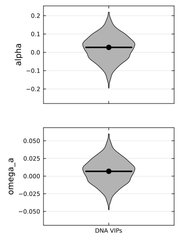

Case and control sets
Is adaptation stronger in a gene set than in comparable genes? The comparison needs control sets that match the case genes on the factors that affect alpha by themselves (expression, recombination, GC content, gene length, ...), so that a difference can be attributed to the case category. MKtest estimates alpha in the case set and in every control set, and gives the empirical p-value of the case against its controls.
Example: virus-interacting proteins
data/DNAonly_VIPs.txt.gz lists 1,064 human genes encoding proteins that interact with viruses (VIPs; the DNA-virus set), and data/DNAonly_nonVIPs.txt.gz 1,000 control sets of non-VIPs matched to them, one set per line (sample_1 GENE GENE ...).
using MKtest, DataFrames
tgp = "data/MKdata_tgp_may2023.txt"
case_sfs, case_div, _ = MKtest.parse_sfs(tgp; sample_size = 661, gene_list = "data/DNAonly_VIPs.txt.gz")
ctl_sfs, ctl_div, _ = MKtest.parse_sfs(tgp; sample_size = 661, gene_list = "data/DNAonly_nonVIPs.txt.gz")
# one SFS for the case set; a Vector of 1000 SFS, one per control set
case = MKtest.fww_mk(case_sfs, case_div) # (alpha = 0.027, p_value = 0.660, ...)
ctl = MKtest.fww_mk(ctl_sfs, ctl_div) # a DataFrame, one row per control set
tbl = MKtest.case_control_table(DataFrame([case]), ctl; analysis = "DNA VIPs")
# analysis type set alpha p_value omega ...
# DNA VIPs case 1 0.027 0.660 0.254
# DNA VIPs control 1 -0.021 0.770 0.266
# DNA VIPs control 2 0.096 0.108 0.268
# ...
MKtest.empirical_test(tbl; params = [:alpha])
# analysis param case control_median n_control p stars
# DNA VIPs alpha 0.027 0.027 1000 0.501Here the FWW alpha of DNA-virus VIPs is no different from that of their controls (p = 0.50). This example uses fww_mk because it is fast and defined for every set; the asymptotic MK test, for instance, fails to fit on many of these control sets and returns NaN for them (empirical_test drops non-finite controls and reports n_control).
case_control_table(case, control; analysis)stacks one case and its controls into a long table:analysis,type,set, then the columns both share.casemust be one row (wrap a single result withDataFrame([result])). Build one table per analysis andvcatthem.empirical_test(tbl; params, alternative = :greater)gives, per analysis and parameter,p = (1 + #controls >= case) / (1 + n)(Davison & Hinkley 1997), never 0.alternative = :lessor:two_sidedfor the other directions.
With ABC-MK, the published approach, use the abcmk outputs directly: they hold alpha, alphaW and alphaS for every set, which are empirical_test's default parameters.
res_case = MKtest.abcmk(param, [case_sfs], [case_div]; h5_file = "rates_tgp.jld2",
summstat_size = 1e5, output_folder = "abc_case", tol = 1000)
res_ctl = MKtest.abcmk(param, ctl_sfs, ctl_div; h5_file = "rates_tgp.jld2",
summstat_size = 1e5, output_folder = "abc_ctl", tol = 1000)
tbl = MKtest.case_control_table(res_case, res_ctl; analysis = "DNA VIPs")
MKtest.empirical_test(tbl) # α, α_strong, α_weak
MKtest.empirical_test(tbl; omega = true)(see ABC-MK for param and the table; run valid_data on the controls first).
Plots
The FWW example above, computed here when the page is built. With StatsPlots.jl loaded, plot_violins_empirical draws one violin of the control values per parameter and analysis, with the case as a dot and its significance as stars:
using MKtest, DataFrames, StatsPlots
data = joinpath(pkgdir(MKtest), "data")
tgp = joinpath(data, "MKdata_tgp_may2023.txt")
case_sfs, case_div, case_ax = MKtest.parse_sfs(tgp; sample_size = 661,
gene_list = joinpath(data, "DNAonly_VIPs.txt.gz"))
ctl_sfs, ctl_div, ctl_ax = MKtest.parse_sfs(tgp; sample_size = 661,
gene_list = joinpath(data, "DNAonly_nonVIPs.txt.gz"))
tbl = MKtest.case_control_table(DataFrame([MKtest.fww_mk(case_sfs, case_div)]),
MKtest.fww_mk(ctl_sfs, ctl_div); analysis = "DNA VIPs")
MKtest.plot_violins_empirical(tbl; params = [:alpha, :omega_a])
The alpha(x) curve of the case set against the band of its control sets is on the MK tests page.
Making the control sets
MKtest.bootstrap draws matched control sets for a case gene list:
bp = MKtest.bootstrap_parameters(data = "my_case_genes.txt",
annotations = "data/ensembl_gene_coords_v109.bed",
confounding_factors = "data/confounding_factors.txt",
output = "my_case", seed = 1)
res = MKtest.bootstrap(bp)
# writes my_case_case.txt (the case genes kept) and my_case_control.txt (the control sets,
# sample_1 ... sample_1000); res.case and res.control hold the sameThis is the control-set building of Enard & Petrov (2020) and Di et al. (2021): each control set grows gene by gene so that its average of every confounding factor stays within tolerance (default 5%) of the case set's average. Candidates are genes at least distance bp from the closest case gene (get_distance: between gene midpoints on the same chromosome, as bedtools closest -d gives it; the default 1 only excludes the case genes themselves). Genes on a chromosome with no case gene are always far enough, so with autosomal cases the X-linked genes of confounding_factors are candidates too; leave them out of that file if they should not be. A control gene can make up at most max_reps / n_case of the control genes drawn in one iteration (about max_reps copies per set). Each iteration gives 100 sets (iterations = 10: 1000 sets), and seed makes them reproducible at any thread count. Human HLA and histone genes are left out (filter_hla_hist = true). my_case_control.txt has the one-set-per-line format above, which parse_sfs reads directly. If an iteration cannot reach its target bootstrap throws and writes nothing: loosen tolerance or max_reps, or lower distance.
confounding_factors is a space-separated file without header: the gene ID, then one numeric column per factor. Any set of factors works the same way. data/confounding_factors.txt is the human set of Di et al. (2021), for 16,331 genes:
- expression (log2 TPM): average over 53 GTEx v7 tissues, lymphocytes, testis;
- deCode recombination rate, GC content, coding-sequence density, phastCons conserved element density and DNase I hypersensitive site density, each in 50 kb and 500 kb windows centred on the gene;
- the number of protein-protein interactions (log2), the gene length, and the number of neighbouring genes in 50 kb and 500 kb;
- the number of interacting viruses, the proportion of immune genes;
- pN and pS in African populations, and McVicker's B.
The helpers behind it (get_distance, get_bootstrap, empirical_pvalues) are in the Reference.